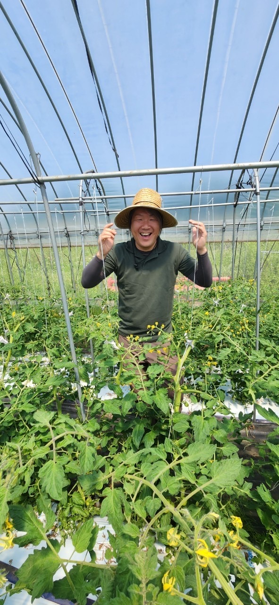

アグリコミュニティの立ち上げ・運営サポート
信州アグリコミュニティサポート
つながる。はじめる。挑戦する。
アグリコミュニティをつくる・育てる・動かす。
農業をテーマにしたコミュニティを、つくる人・育てる人へ。方向性の整理から立ち上げ、運営、その先の展開まで、第三者の視点で一緒に考え、伴走します。
人×地域×農業×起業×資源×アイデア
CONNECT THE DOTS
合同会社フィールネクスト｜長野県小諸市｜農業現場での経験 約20年
こんなことを考えていませんか？
ひとつでも当てはまれば、お話しできることがあります。
- ✓農業をテーマにしたコミュニティをつくりたい
- ✓農業をきっかけに人をつなげたい
- ✓地域で交流の場をつくりたい
- ✓すでにコミュニティを運営しているが、うまくいかない
- ✓活動を継続できる形にしたい
- ✓参加者を増やしたい
- ✓イベントや企画を考えたい
- ✓農業と他の分野（観光・食・教育など）を組み合わせたい
- ✓地域資源（農地・空き施設・人材など）を活用したい
- ✓コミュニティを新しい仕事や事業につなげたい
このサービスの立ち位置
アグリコミュニティとは
農業をテーマにした「人がつながる場」をつくり、育てるための支援です。
アグリコミュニティをつくる・育てる・動かす
小さな相談から始まり、コミュニティを経て、活動や事業へと育っていきます。
相談
思っていること、悩んでいることを話すところから。
コミュニティ
方向性を整理し、設計・立ち上げ・運営を支援。
活動
イベント・体験・企画など、具体的な動きが生まれる。
事業
必要に応じて、新しい仕事やプロジェクトへ発展。
メインサービス
4つのサポート
状況に合わせて、必要な支援だけを組み合わせられます。
アドバイス
コミュニティづくりや運営について相談したい方向け。
- アイデアの壁打ち
- 方向性の整理
- 悩みの整理
- 運営方法の相談
- 第三者視点からのアドバイス
コンサルティング
コミュニティの方向性や仕組みを整理したい方向け。
- コンセプト整理
- 活動内容の整理
- 運営方法・継続方法
- 参加者との関係づくり
- 課題整理・改善方法
立ち上げ支援
これからコミュニティをつくりたい方向け。
- コンセプト設計
- 企画・活動内容の設計
- 参加者募集の考え方
- 地域や生産者とのつながりづくり
- 運営方法の設計・立ち上げ準備
伴走支援
活動中、または継続的に支援してほしい方向け。
- 定期相談・運営支援
- 企画相談
- 課題整理・改善
- 次の活動の検討
- 新しい企画づくり
ブランドコンセプト
CONNECT THE DOTS
農業だけを見るのではなく、さまざまな「点」をつなげます。点がつながることで、新しい可能性が生まれます。
人
移住者、地域住民、生産者、企業、参加者など。
地域
地域づくり、交流、移住、関係人口など。
農業
農業体験、農ある暮らし、就農、生産者との連携など。
起業
新しい仕事、事業、プロジェクト、地域ビジネスなど。
資源
農地、空き施設、食、自然、文化、人材など。
アイデア
企画、イベント、コミュニティ、新しい取り組みなど。
「アグリ」の意味
「アグリ」は、農業だけを指しません
農業を一つの接点・きっかけとして、いろいろな分野へ広がっていきます。
農業を起点に、人・地域・アイデアをつなぎ、新しい活動を生み出していく。それが、このサービスの考え方です。
コミュニティから、その先へ。
コミュニティをつくること自体がゴールではありません。人がつながることで、新しい動きが生まれます。
- イベント
- 農業体験
- 地域活動
- 新しいプロジェクト
- 企業との連携
- 農業×観光
- 農業×食
- 農業×教育
- 新しい仕事
- 新規事業
このサービスの強み
第三者だからできること
外から見るから、見えることがある。
コミュニティの内部だけでは気づきにくい、方向性・参加者との関係・運営上の課題・企画の可能性・地域との接点・他分野との組み合わせ・次に何をするべきかを、第三者の視点から一緒に整理します。
なぜこのサービスを提供できるのか
- ・長野県の農業現場での約20年の経験
- ・生産者との関係、農産物の生産・販売経験
- ・肥料販売、農産物流通に関する経験
- ・食品関連企業との接点、地域とのつながり
- ・農業現場を理解した上での企画・支援
運営者について
代表・フィールネクストについて

小林大二
合同会社フィールネクスト 代表
農業現場から流通まで、約20年
長野県小諸市を拠点に、肥料販売、農産物の生産・販売、農産物流通など、農業現場から流通まで幅広く携わってきました。生産者、農業法人、食品関連企業などとのつながりを活かし、農業を起点とした企画・プロジェクトづくりを支援しています。
この経験は「農業の専門家」としてではなく、人・地域・農業・資源・アイデアをつなぐための背景として活かされています。
料金
小さな相談から、必要な支援だけを
個人でも企業・自治体でも、どなたでもご利用いただけます。実際に形にして動かす段階になるほど、関わる範囲が広がり、料金も上がる構造です。
初回相談
無料30〜45分程度。まずは「何をしたいのか」「何に困っているのか」を相談できる入口です。
スポット相談
5,000円〜60分程度。アイデアの壁打ち、方向性相談、コミュニティ運営相談など。
深掘り相談・情報整理
10,000円〜より時間をかけて課題や方向性を整理します。
リサーチ・情報整理
20,000円〜必要な情報収集、整理、比較、方向性の検討など。
企画・方向性整理
30,000円〜コミュニティや活動の方向性、コンセプト、企画内容などを整理します。
立ち上げ支援
50,000円〜実際のコミュニティ立ち上げに向けた設計・準備・支援です。
伴走支援
50,000円〜／月継続的な相談・運営支援・改善など。内容・頻度・規模に応じて個別提案します。
本格的なプロジェクト企画・プロデュース
300,000円〜コミュニティの先にあるイベント、新規プロジェクト、新しい事業などを具体的に形にしていく場合です。
ご利用の流れ
まだ何も決まっていない段階からで大丈夫です。
お問い合わせ
フォームから、今考えていることをお送りください。
初回相談（無料）
オンラインまたは対面で、状況やご希望をヒアリング。
ご提案・お見積り
内容に合わせて、必要な支援と料金をご提案します。
支援スタート
相談・整理・設計など、必要な支援を進めます。
継続・発展
運営、伴走、企画・プロデュースへと発展できます。
よくある質問
まだコミュニティを作っていなくても相談できますか？
個人でも利用できますか？
農業経験がなくても相談できますか？
コミュニティ運営を丸ごと代行してもらえますか？
料金はいくらですか？
まずは無料で相談しませんか？
「まだ具体的に決まっていない」という方も、もちろん相談できます。今考えていることを、そのまま書いてください。
信州アグリコミュニティサポート
合同会社フィールネクスト｜長野県小諸市
メールでのお問い合わせも受け付けています：
feelnext.llc@gmail.com